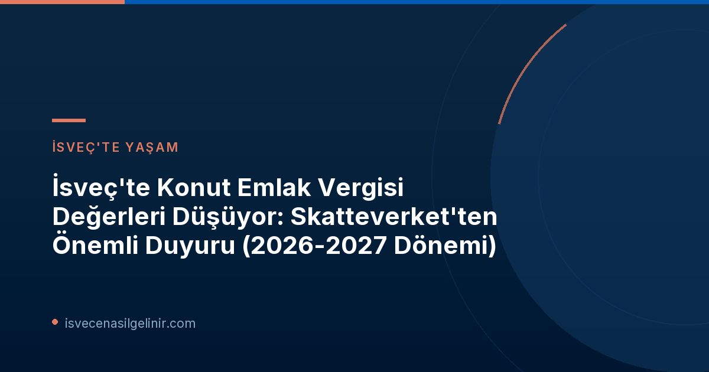

Skatteverket, her üç yılda bir küçük evler için kapsamlı bir vergi değerlemesi (småhustaxering) gerçekleştirir. Bu değerlemeler, genellikle önceki yılların emlak piyasasındaki satış fiyatlarına göre belirlenir. Önceki dönemlerde, özellikle 2021 ve 2024 yıllarında (2020-2022 satış fiyatları baz alınarak) emlak değerlerinde artışlar gözlemlenmişti. Ancak 2026-2027 dönemi için trend tersine döndü.
İsveç'te Konut Emlak Vergisi Değerleri Neden Düşüyor?
Geçmiş Trendler ve Mevcut Durum
Vergi daireleri, emlak değerlerini belirlerken genellikle iki yıl önceki piyasa koşullarını değerlendirir. Mevcut değerlemede, 2023-2025 yılları arasındaki satış fiyatları esas alınmıştır. Bu dönemdeki piyasa dalgalanmaları ve genel ekonomik koşullar, emlak değerlerinde ortalama bir düşüşe yol açmıştır. Skatteverket yetkililerinden Jerker Wesslén'in vurguladığı gibi, doğru bilgilerin sağlanması, emlak vergileri, sigortalar ve konut kredileri açısından büyük önem taşımaktadır.
Coğrafi Farklılıklar: En Çok Azalan ve Artan Bölgeler
Ülke genelinde ortalama bir düşüş gözlemlense de, bölgesel farklılıklar dikkat çekicidir. Bazı illerde düşüş oldukça belirginken, bazı illerde küçük artışlar yaşanmıştır. İşte bu coğrafi değişimler:
Bölgesel Değişim Özetleri
- En Büyük Düşüş: Västmanlands län (%-8)
- En Büyük Artış: Norrbottens län (%+6)
- Ülke Ortalaması: %-3
Küçük Ev Sahipleri İçin Ne Anlama Geliyor?
Beyan Süreci ve Önemli Tarihler
Eylül ayı içinde, İsveç'teki yaklaşık 2,5 milyon küçük ev sahibine yeni vergi değeri teklifleri veya beyannameler gönderilmeye başlandı. Dijital posta kutusu olanlar 7 Eylül'den itibaren, fiziki posta kutusu kullananlar ise 23 Eylül'den itibaren bu bildirimleri alacaklar.
Eğer evinizde büyük bir tadilat yapmadıysanız veya önemli bir standard iyileştirmesi gerçekleştirmediyseniz, Skatteverket'in size göndereceği teklifi kontrol etmeniz yeterli olacaktır. Tüm bilgiler doğruysa, başka bir işlem yapmanıza gerek kalmayacaktır.
| Tarih | Açıklama |
|---|---|
| 7 Eylül 2026 | Dijital posta kutularına yeni vergi değeri teklifleri ve beyannamelerin gönderilmeye başlanması. |
| 23 Eylül 2026 | Fiziki posta kutusu olmayan ev sahiplerine gönderimlerin başlaması. |
| 2 Kasım 2026 | Beyannamelerin veya teklifteki değişikliklerin Skatteverket'e son teslim tarihi. |
| Haziran 2027 | Skatteverket'in yeni emlak değerlemesi kararlarını dijital ve yazılı olarak göndereceği tarih. |
Dijital Hizmetlerin Avantajları
Skatteverket, "Fastighetsdeklaration, småhus" adlı e-hizmeti aracılığıyla ev sahiplerine kolaylık sağlıyor. Bu dijital hizmet üzerinden beyannamelerinizi doldurabilir, bilgileri güncelleyebilir ve gerektiğinde değişiklik yapabilirsiniz. Bu platformu kullanmak, hata yapma riskini en aza indirirken, aynı zamanda bilgilerinizi hızlı ve güvenli bir şekilde göndermenizi sağlar.
Ayrıca, 7 Eylül – 2 Kasım tarihleri arasında hafta içi 09:00-15:00 saatleri arasında e-hizmet üzerinden bir görevliyle doğrudan sohbet edebilir ve sorularınıza anında yanıt alabilirsiniz. Bu interaktif destek, karmaşık olabilecek süreçlerde ev sahiplerine büyük kolaylık sunmaktadır.
İsveç'te vatandaşlık başvuru süreçleri ve İsveç Vatandaşlık Testi hakkında güncel bilgilere ulaşmak için sitemizi ziyaret etmeyi unutmayın.
Genel Emlak Değerlemesi Hakkında Bilmeniz Gerekenler
Emlak Değeri ve Piyasa Değeri İlişkisi
Skatteverket tarafından belirlenen bir gayrimenkulün vergi değeri, o gayrimenkulün bulunduğu değerleme alanındaki muhtemel piyasa değerinin iki yıl önceki %75'ine denk gelmelidir. Bu, vergi değerinin gerçek piyasa değerinin bir yansıması olduğunu, ancak birebir aynı olmadığını gösterir.
Çoklu Sahiplik Durumu
Eğer bir gayrimenkule birden fazla kişi sahipse, beyanname veya yeni vergi değeri teklifi, ortak sahiplerden birine gönderilir. Genellikle bu kişi, tapu kaydında adı en üst sırada yer alan kişidir.
2027 Genel Emlak Değerlemesi Öncesi İl Bazında Değişimler (Tablo)
Aşağıdaki tablo, 2024 basitleştirilmiş emlak değerlemesiyle karşılaştırıldığında, 2027 genel emlak değerlemesi öncesi illere göre vergi değerlerindeki yüzde değişimi göstermektedir. Tablo sadece 220 tip kodlu (yerleşim yeri olan küçük ev birimi) küçük evleri kapsamaktadır.
| İl (Län) | Küçük Ev Sayısı | Değişim (%) |
|---|---|---|
| Stockholm | 302 782 | −7 |
| Uppsala | 73 944 | −6 |
| Södermanland | 66 929 | −7 |
| Östergötland | 91 643 | −6 |
| Jönköping | 80 091 | −4 |
| Kronoberg | 48 090 | −4 |
| Kalmar | 78 050 | 1 |
| Gotland | 19 825 | 0 |
| Blekinge | 46 292 | 1 |
| Skåne | 258 225 | −4 |
| Halland | 88 145 | −5 |
| Västra Götaland | 347 549 | −4 |
| Värmland | 77 469 | 0 |
| Örebro | 63 742 | −4 |
| Västmanland | 54 687 | −8 |
| Dalarna | 94 358 | −1 |
| Gävleborg | 73 341 | −3 |
| Västernorrland | 63 931 | 4 |
| Jämtland | 45 989 | 2 |
| Västerbotten | 69 436 | 1 |
| Norrbotten | 70 454 | 6 |
| Riket totalt (Ülke Geneli Toplamı) | 2 114 972 | −3 |
Sıkça Sorulan Sorular ve İletişim
Skatteverket'in web sitesinde (www.skatteverket.se) daha fazla bilgi bulabilir, "Deklarera småhus" bölümünden küçük ev beyanname süreçlerine ulaşabilirsiniz. Ayrıca, medya için belirtilen iletişim kişileri aracılığıyla (Jerker Wesslén, Johanna Eklund Emsfors, Victoria Andersson Håkanson) detaylı bilgi alabilirsiniz.
Referanslar
İsveç'te Konut Sahibi Misiniz?
Skatteverket'in son duyurusuyla ilgili aklınızdaki tüm soruları yanıtlamak ve emlak vergi değerlerinizdeki düşüşün size nasıl etki edeceğini anlamak için rehberimizi okuyun. Doğru beyanlarla finansal avantajlar sağlayın!